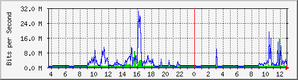
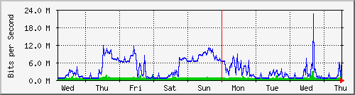
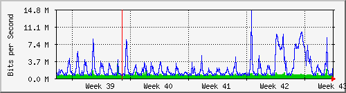
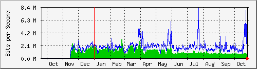

Traffic Analysis for Gi1/0/5 -- ISP-border.sky
| System: | ISP-border.sky in Stoika |
| Maintainer: | falcon@skyinet.org |
| Description: | GigabitEthernet1/0/5 virtual-vneshka |
| ifType: | ethernetCsmacd (6) |
| ifName: | Gi1/0/5 |
| Max Speed: | 1000.0 Mbits/s |
| Ip: | No Ip (No DNS name) |
The statistics were last updated Thursday, 26 October 2017 at 12:55,
at which time 'ISP-border.sky' had been up for 8 days, 10:32:46.
`Daily' Graph (5 Minute Average)

|
Max |
Average |
Current |
| In |
15.4 Mb/s (1.5%) |
797.3 kb/s (0.1%) |
673.9 kb/s (0.1%) |
| Out |
30.3 Mb/s (3.0%) |
1997.4 kb/s (0.2%) |
3647.0 kb/s (0.4%) |
`Weekly' Graph (30 Minute Average)

|
Max |
Average |
Current |
| In |
3242.8 kb/s (0.3%) |
751.4 kb/s (0.1%) |
684.4 kb/s (0.1%) |
| Out |
22.5 Mb/s (2.3%) |
3538.1 kb/s (0.4%) |
3609.2 kb/s (0.4%) |
`Monthly' Graph (2 Hour Average)

|
Max |
Average |
Current |
| In |
3147.8 kb/s (0.3%) |
709.0 kb/s (0.1%) |
741.7 kb/s (0.1%) |
| Out |
14.4 Mb/s (1.4%) |
1999.7 kb/s (0.2%) |
3360.4 kb/s (0.3%) |
`Yearly' Graph (1 Day Average)

|
Max |
Average |
Current |
| In |
3102.0 kb/s (0.3%) |
1091.9 kb/s (0.1%) |
797.4 kb/s (0.1%) |
| Out |
8210.2 kb/s (0.8%) |
1866.4 kb/s (0.2%) |
2088.1 kb/s (0.2%) |
| GREEN ### |
Incoming Traffic in Bits per Second |
| BLUE ### |
Outgoing Traffic in Bits per Second |